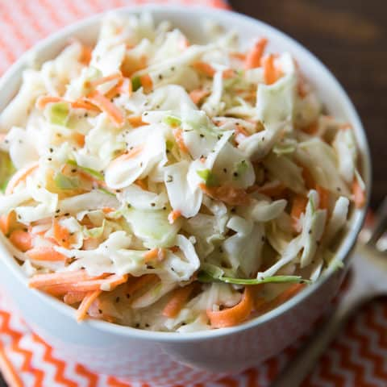

Sweet Restaurant Slaw

Learn the secret to that sweet restaurant-style slaw and make it in the comfort of your own home.
No need to go out to fill that sweet slaw craving anymore.
Ingredients
- 1 bag coleslaw mix
- 2 tablespoons diced onion
- 2/3 cup creamy salad dressing
- 1/2 cup white sugar
- 3 tablespoons vegetable oil
- 1 tablespoon white vinegar
- 1/2 teaspoon poppy seeds
- 1/4 teaspoon salt
Steps
- Combine coleslaw mix in large bowl.
- Whisk salad dressing, sugar, vegetable oil, vinegar, poppy seeds, and salt together in medium bowl until blended. Pour dressing over coleslaw mix and toss to coat.
- Chill for at least 2 hours before serving.
- That's it! Enjoy!